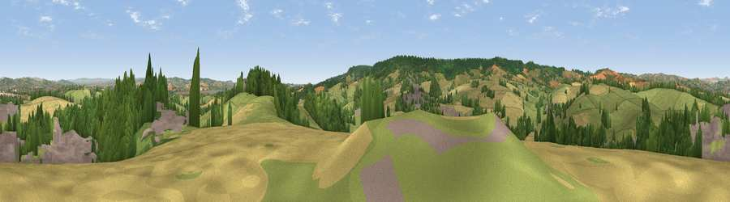

Viewpoint near Kennford
#10367 in England · top 16% of its area beats it · near KennfordThe view, rendered

A 360° render of this exact spot computed from the terrain model, tree cover and land cover — summer colours, afternoon light, calibrated against photographs of famous viewpoints. Real trees, hedges and buildings will differ in detail.
The panorama
Grey silhouette: terrain skyline in each direction (720 bearings, Earth curvature and refraction included). Dashed green: skyline with trees (+15 m) and buildings (+8 m) as obstacles. Blue strip: how far the ground is visible on each bearing.
Where the view opens
Wedge length = distance to the farthest visible ground on that bearing (vegetation-aware). Rings at 10, 25 and 50 km.
What fills the view
44% grassland · 24% woodland · 19% cropland · 12% built-up
Angular shares of the visible panorama (visual magnitude), not map area. Landscape diversity 0.57 (0–1 Shannon).
Key numbers
More beautiful places nearby
The staircase of upgrades: each row has a higher view potential than everything closer. Driving times are estimates from straight-line distance, calibrated against real road routing — check an actual route before setting out.
| Place | Direction | Drive | Score |
|---|---|---|---|
| Viewpoint near Kenn | SSW · 3 km | ~7 min | 80.0 |
| Viewpoint near Kenton | S · 5 km | ~12 min | 80.7 |
| Viewpoint near Kenton | S · 6 km | ~13 min | 82.9 |
| Viewpoint near Holcombe | S · 12 km | ~22 min | 83.3 |
| Viewpoint near Shaldon | S · 16 km | ~28 min | 83.8 |
| Viewpoint near Stokeinteignhead | S · 17 km | ~30 min | 84.1 |
| High Peak | E · 18 km | ~32 min | 85.3 |
| Golden Cap | E · 49 km | ~70 min | 88.7 |
50.67058, -3.53075 · source: screening · position refined by local search. Computed location — check access rights before visiting.